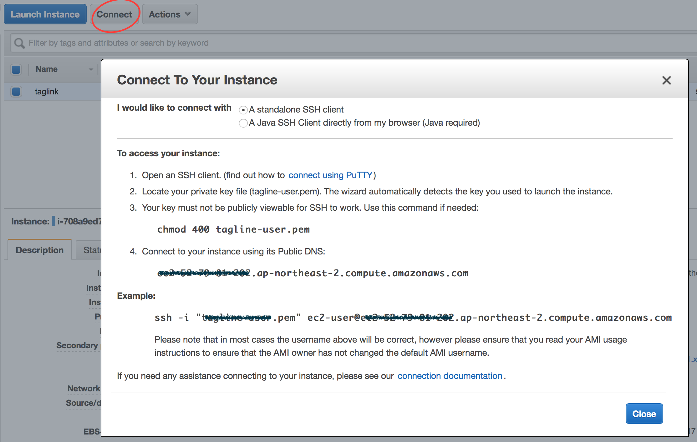

Spring Boot로 개발한 간단한 서비스를 AWS EC2에 올리고 싶었고, 가장 간단한 방법을 찾는 중에 Docker를 사용해 올리게 됐습니다. 이번 글은 Docker를 사용해 Spring Boot 애플리케이션을 EC2에 올리고 실행하는 방법을 설명합니다.
Spring Boot 애플리케이션에 Docker 설정하기
Docker를 사용하기 위해서는 1)docker 메이븐 플러그인과 2)dockerfile을 추가하면 됩니다.
먼저 메이븐 플러그인은 아래처럼 설정을 추가하면 됩니다.
...
<plugin>
<groupId>com.spotify</groupId>
<artifactId>docker-maven-plugin</artifactId>
<version>0.3.9</version>
<configuration>
<imageName>chanwook/${project.artifactId}</imageName> (1)
<dockerDirectory>src/main/docker</dockerDirectory> (2)
<resources>
<resource>
<targetPath>/</targetPath>
<directory>${project.build.directory}</directory>
<include>${project.build.finalName}.jar</include>
</resource>
</resources>
</configuration>
</plugin>
...(1)번에서는 만들 이미지의 '{저장소}/{이미지ID}'를 적어주면 되고, (2)번에서는 dockerfile의 경로를 적어주면 됩니다.
Docker 파일은 아래와 같이 만들었습니다.
FROM java:8 VOLUME /tmp ADD taglink-1.0-SNAPSHOT.jar app.jar RUN bash -c 'touch /app.jar' ENTRYPOINT ["java","-Djava.security.egd=file:/dev/./urandom","-jar","/app.jar"]
dockerfile에 대한 상세한 설명은 Docker 레퍼런스를 참고해주세요. (dockerfile에 대해서는 그 이상 저도 아직 잘 몰라요..)
로컬환경에서 Docker 빌드하기
우선 Docker가 로컬에 설치되어 있어야겠죠^^. 아래 내용은 설치가 되어 있다고 가정하고 진행을 합니다.
설명은 Docker 홈페이지에 잘 나와 있습니다. 저처럼 맥을 사용하시는 분은 이 페이지를 참고하세요~
Docker를 설치했다면 Docker VM을 생성합니다.
docker-machine create --driver virtualbox {VM이름}
docker-machine env {VM이름}
eval "$(docker-machine env {VM이름})"
신규 생성이 아니고 재시작할 때는 2, 3번째 라인만 실행하면 됩니다.
그럼 잘 생성되었는지 확인해보겠습니다.
$ docker-machine ls NAME ACTIVE DRIVER STATE URL SWARM DOCKER ERRORS default - virtualbox Stopped Unknown default2 - virtualbox Saved Unknown default3 - virtualbox Stopped Unknown taglink - virtualbox Running tcp://192.168.99.100:2376 v1.9.1
이제는 Docker 이미지를 빌드 할 차례입니다. 소스코드가 있는 루트 경로(pom.xml이 있는 위치)로 이동해서 아래 명령어를 실행합니다.
$ mvn clean package docker:build
dockerfile에 따라 순서대로 빌드를 실행합니다. 빌드가 완료되면 로컬 저장소에 이미지가 생성된 걸 확인할 수가 있습니다.
$ docker images REPOSITORY TAG IMAGE ID CREATED VIRTUAL SIZE chanwook/taglink latest dacd1fb3a4fe About a minute ago 680.7 MB java 8 a3405db8ea92 38 hours ago 642.3 MB
DockerHub로 이미지 푸쉬(push)하기
이제는 DockerHub로 이미지를 푸쉬하겠습니다.
처음 실행이라면 콘솔에서 docker 로그인이 필요합니다. id/password/email을 입력하면 됩니다.
$ doker login
이제 푸쉬.
$ docker push {저장소}/{이미지ID}
DockerHub에서 만든 계정의 기본 저장소를 사용하거나 저장소를 만들어줄 수가 있습니다.
EC2에 Docker 설치하기
우선 EC2 인스턴스가 있어야겠지요.
EC2 인스턴스는 쉽게 AWS 콘솔 상에서 만들 수가 있습니다. 실행하고 나서는 SSH로 접속을 합니다. 방법은 AWS 콘솔에 쉽게 잘 설명이 되어 있습니다.

자, 이제 Docker를 설치하죠. EC2에 Docker를 설치하는 방법은 이미 AWS 가이드에서 잘 설명하고 있습니다.
yum으로 쉽게 설치가 가능합니다. 명령어만 모아 보면 아래와 같아요.
$ sudo yum update -y $ sudo yum install -y docker $ sudo service docker start $ sudo usermod -a -G docker ec2-user (주의!) $ docker info (로 확인!)
| '주의!'라고 적힌 명령어를 실행하고 나서는 반드시 ssh를 로그아웃 하고 다시 접속을 해야 합니다. 그렇지 않으면 권한 할당이 안되어 계속 sudo를 붙여주어야 합니다. (AWS 문서 상으로는 7번!) |
EC2에서 이미지를 가져와(pull) 실행하기
이제 마지막 단계입니다. DockerHub에 올라가 있는 이미지를 가지고 오도록 하겠습니다(pull).
$ docker pull {저장소}/{이미지ID}
저는 AWS 한국 리전에 인스턴스를 만들었는데 아무래도 DockerHub에서 다운로드 하는 속도가 빠르지 않아 600MB 정도 되는 이미지를 다운로드 하는 데 꽤 시간이 걸렸습니다.
다운로드가 완료되었으면 이미지를 잘 가지고 왔는지 확인을 해보겠습니다.
$ docker images REPOSITORY TAG IMAGE ID CREATED VIRTUAL SIZE chanwook/taglink latest 2fbcef869fe0 21 hours ago 680.6 MB <none> <none> 5fd076b38b33 3 days ago 680.6 MB
이제 실행을 해보겠습니다.
$ docker run --name {인스턴스이름}
-p 80:9901
-e "SPRING_PROFILES_ACTIVE=docker" -e "spring.data.mongodb.password=xxxx"
-t {저장소}/{이미지ID}
EC2의 기본 HTTP 포트인 80을 Spring Boot로 실행하는 임베디드 톰캣의 포트인 9001로 매핑을 해주었습니다. 그리고 추가로 프로파일과 몽고DB 비밀번호를 VM 아규먼트로 전달했습니다. 아규먼트를 추가할 때는 -e "key=value" 형식으로 추가해주시면 됩니다.
명령어를 실행하고 나면 익숙한 Spring Boot 로고를 찍으며 애플리케이션이 실행되는 걸 확인할 수가 있습니다~ (만세!!)
프로세스가 잘 실행되고 있는지 확인해보죠. docker나 이미지ID 등으로 grep해 확인해볼 수 있습니다.
[ec2-user@ip-172-31-18-74 ~]$ ps -ef | grep docker ... [ec2-user@ip-172-31-18-74 ~]$ ps -ef | grep taglink ...
이제 브라우저로 확인해보면 완료입니다^^.
확인할 수 있는 주소는 EC의 Public DNS를 사용하면 되겠죠. 저같은 경우에는 'ec2-52-79-81-202.ap-northeast-2.compute.amazonaws.com/블라블라’가 되겠네요.
실행 중인 docker 인스턴스를 중지할 때는 아래 명령어를 사용합니다.
& docker stop {인스턴스이름}
여기서 이름은 인스턴스 실행 시에 '--name’으로 입력한 문자열입니다.
삭제하고 싶을 때는 아래처럼 하세요.
$ docker rm {인스턴스이름}
마무리
여기까지 Spring Boot 애플리케이션을 Docker를 사용해서 EC2에 올리고 실행하는 방법을 살펴봤습니다. EC2에서 최초 이미지 다운로드에 시간이 꽤 걸린 걸 제외하고는 쉽게 배포를 할수가 있어 좋았습니다. 위키 개발할 때는 굳이 자동화를 꼭 해야하기 전까지는 이 방법을 사용해야겠습니다.